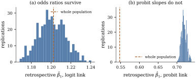

35.5 Case–control sampling
A rare disease affects one person in a thousand, so a
prospective study hoping to see a hundred cases must
follow a hundred thousand people, most of whom carry
almost none of the weight
35.5.1. Only the intercept moves
Let
(a)
(b) let
(c) if
Proof.
(a) By Bayes’ theorem, writing
(b) Put
(c) By (a) the fitted intercept estimates
Part (a) is why the odds ratio dominates epidemiology. It is not that odds ratios are more natural than risk ratios — they are less natural — but that they are the only effect measure a retrospective study can estimate without knowing how the sample was drawn. Part (b) says this belongs to the logit alone.
Remark (Why the prospective likelihood is
legitimate). Part (a) says the model
transfers, not that maximizing the ordinary prospective
likelihood on retrospective data is a correct procedure:
the actual likelihood of such a sample is
Take a population of
Now take every case and four random controls per
case, and fit the same model to those records as if they
had been collected prospectively. Averaged over
With data generated from a probit model and
fitted with a probit link, the population slope is

import numpy as np
import statsmodels.api as sm
rng = np.random.default_rng(20)
N = 200_000
alpha, beta1, beta2 = -5.0, 1.2, 0.8
x1 = rng.normal(size=N) # a continuous exposure
x2 = (rng.random(N) < 0.3).astype(float) # a binary covariate
Xpop = np.column_stack([np.ones(N), x1, x2])
ypop = (rng.random(N) < 1 / (1 + np.exp(-(Xpop @ [alpha, beta1, beta2])))).astype(float)
prospective = sm.GLM(ypop, Xpop, family=sm.families.Binomial()).fit()
cases = np.flatnonzero(ypop == 1)
controls = np.flatnonzero(ypop == 0)
n1 = len(cases)
print("prevalence", ypop.mean().round(4), " cases", n1)
print("whole population:", prospective.params.round(3))def case_control(rng, ratio=4, link=None):
"""Take every case and `ratio` controls per case; fit the same model prospectively."""
keep = np.r_[cases, rng.choice(controls, ratio * n1, replace=False)]
family = sm.families.Binomial(link=link) if link else sm.families.Binomial()
return sm.GLM(ypop[keep], Xpop[keep], family=family).fit().params
rng2 = np.random.default_rng(7)
draws = np.array([case_control(rng2) for _ in range(400)])
shift = np.log(1.0 / (4 * n1 / len(controls))) # log(rho_1 / rho_0)
print("mean case-control estimate:", draws.mean(0).round(3))
print("predicted intercept:", round(prospective.params[0] + shift, 3))
print("slopes in the population:", prospective.params[1:].round(3))35.5.2. Matched designs
Controls are often matched to cases on variables that
matter but are not of interest: age, sex, neighbourhood.
A matched set is one case and
In the model above, suppose exactly one member of each set is a case, and condition on that fact. Then:
(a) the conditional probability that member
free of
(b) the product of these over
(c) for
Proof.
(a) With
(b) The sets are independent and Eq. 35.5.1 is a genuine probability model for a fixed parameter
(c) Part (a) with
Simulate
from scipy.optimize import minimize
def matched_pairs(K=3000, beta=1.0, seed=11):
"""K strata, each with one case and one control, and a stratum-specific intercept."""
rng = np.random.default_rng(seed)
a = rng.normal(-1.0, 2.0, K) # the nuisance intercepts
xc, xk = np.empty(K), np.empty(K)
for k in range(K):
while True: # sample the stratum until it is discordant
x = rng.normal(size=2)
pr = 1 / (1 + np.exp(-(a[k] + beta * x)))
yy = rng.random(2) < pr
if yy[0] != yy[1]:
xc[k], xk[k] = (x[0], x[1]) if yy[0] else (x[1], x[0])
break
return xc, xk # exposure of the case, of the control
x_case, x_control = matched_pairs()
# the conditional likelihood for 1:1 matching depends on beta only through the difference
d = x_case - x_control
cond = minimize(lambda b: np.sum(np.log1p(np.exp(-b[0] * d))), [0.0]).x[0]
print("conditional estimate:", round(cond, 3))Matching buys precision when the matching variables
are strong confounders, and costs all information about
them, since they are absorbed into the
35.5.3. Two warnings about odds ratios
Generate a population of
The odds ratio is not collapsible: the best logistic approximation to an average of logistic curves is flatter than they are, by an amount growing with the variance of the omitted term (Exercise (C1)). Conditional and marginal odds ratios therefore answer different questions, and adding a covariate moves the other coefficients away from zero even when it is independent of them, so the reasoning “the coefficient changed, therefore the new variable is a confounder” is invalid here. Risk differences and risk ratios do collapse.
The second warning is causal. Theorem 35.5.1
requires selection to depend on
Idea. Retrospective sampling is the one design in which the choice of link is forced: Theorem 35.5.1 makes the odds ratio estimable under a scheme that destroys every other effect measure. The price is that odds ratios do not collapse, do not approximate risk ratios unless the outcome is rare, and are causal only under the usual assumptions.
35.5.4. Exercises
A. Check your understanding
A case–control study has
Solution. By Theorem 35.5.1(c),
B. Practice
Suppose
For matched pairs with a single binary exposure, let
Solution. With a binary exposure
With
C. Going deeper
Let
Solution.